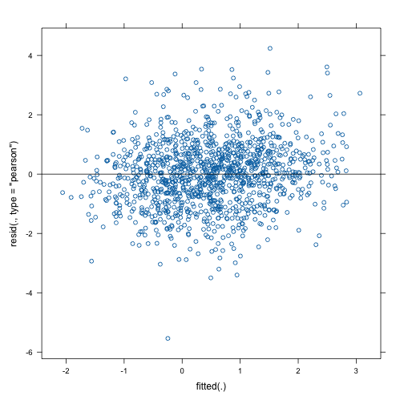
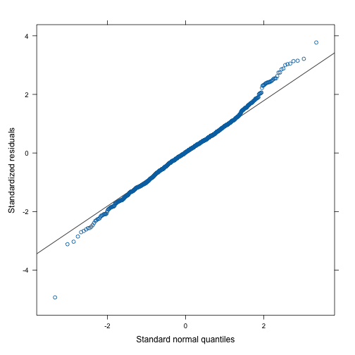

Heteroscedastic Linear Mixed Models
Source:vignettes/lmm_heteroscedastic.Rmd
lmm_heteroscedastic.RmdAt the moment, galamm supports group-wise heteroscedasticity in Gaussian response models. Referring to the model formulation outlined in the introductory vignette, the response model and nonlinear predictor can be easily combined in this particular case, to give
\[ y_{i} = \sum_{s=1}^{S} f_{s}\left(\mathbf{x}_{i}\right) + \sum_{l=2}^{L}\sum_{m=1}^{M_{l}} \eta_{m}^{(l)} \mathbf{z}^{(l)}_{im}{}^{'}\pmb{\lambda}_{m}^{(l)} + \epsilon_{g(i)}, \]
where subscript \(i\) refers to the \(i\)th elementary unit of observation, i.e., the \(i\)th row in the dataframe. \(g(i)\) refers to the group to which the \(i\)th observation belongs, with each grouping having a separately estimated residual variance, \(\epsilon_{g} \sim N(0, \sigma_{g}^{2})\).
In the future, we plan to also support other types of residual terms, including autocorrelation and residuals that depend on continuous variables. Such features are currently supported by the R packages nlme (Pinheiro and Bates 2000), mgcv (Wood 2017), and gamlss (Rigby and Stasinopoulos 2005), however, of these only nlme provides computationally efficient estimation of mixed effects models with a large number of grouping levels, and only with strictly nested groups. If you are aware of other packages implementing such functionality, please let us know.
Group-Wise Heteroscedasticity
The package includes a simulated dataset hsced, in which
the residual variance varies between items.
head(hsced)
#> id tp item x y
#> 1 1 1 1 0.7448212 0.1608286
#> 2 1 1 2 0.7109629 2.2947255
#> 3 1 2 1 0.9507326 -0.4731834
#> 4 1 2 2 0.4205776 1.1280379
#> 5 1 3 1 0.1045820 -0.5129498
#> 6 1 3 2 0.3872984 1.0515916We specify the error structure using an additional formula object,
~ (1 | item), specifying that a different constraint term
should be included per item.
mod <- galamm(
formula = y ~ x + (1 | id),
dispformula = ~ (1 | item),
data = hsced
)The output shows that for item 2, the residual variance is twice that of item 1.
summary(mod)
#> GALAMM fit by maximum marginal likelihood.
#> Formula: y ~ x + (1 | id)
#> Data: hsced
#>
#> AIC BIC logLik deviance df.resid
#> 4126.3 4151.7 -2058.1 4116.3 1195
#>
#> Scaled residuals:
#> Min 1Q Median 3Q Max
#> -5.6545 -0.7105 0.0286 0.6827 4.3261
#>
#> Random effects:
#> Groups Name Variance Std.Dev.
#> id (Intercept) 0.9880 0.9940
#> Residual 0.9597 0.9796
#> Number of obs: 1200, groups: id, 200
#>
#> Variance function:
#> 1 2
#> 1.000 1.995
#>
#> Fixed effects:
#> Estimate Std. Error t value Pr(>|t|)
#> (Intercept) 0.1289 0.0992 1.299 1.938e-01
#> x 0.7062 0.1213 5.822 5.819e-09We can confirm that the lme function from the nlme package gives the same result. It reports the multiplies on the standard deviation scale, so since \(1.412369^2 = 1.995\), the results are identical.
library(nlme)
#>
#> Attaching package: 'nlme'
#> The following object is masked from 'package:lme4':
#>
#> lmList
mod_nlme <- lme(y ~ x,
data = hsced, random = list(id = ~1),
weights = varIdent(form = ~ 1 | item), method = "ML"
)
summary(mod_nlme)
#> Linear mixed-effects model fit by maximum likelihood
#> Data: hsced
#> AIC BIC logLik
#> 4126.28 4151.731 -2058.14
#>
#> Random effects:
#> Formula: ~1 | id
#> (Intercept) Residual
#> StdDev: 0.9940033 0.9796423
#>
#> Variance function:
#> Structure: Different standard deviations per stratum
#> Formula: ~1 | item
#> Parameter estimates:
#> 1 2
#> 1.000000 1.412369
#> Fixed effects: y ~ x
#> Value Std.Error DF t-value p-value
#> (Intercept) 0.1288960 0.09927455 999 1.298379 0.1945
#> x 0.7062301 0.12130578 999 5.821899 0.0000
#> Correlation:
#> (Intr)
#> x -0.624
#>
#> Standardized Within-Group Residuals:
#> Min Q1 Med Q3 Max
#> -4.00355402 -0.60661607 0.02357892 0.60903083 3.06299731
#>
#> Number of Observations: 1200
#> Number of Groups: 200The diagnostic plot also looks good.

The quantile-quantile plot is also acceptable.
qqmath(mod)
We can compare the model to one with homoscedastic residuals.
mod0 <- galamm(
formula = y ~ x + (1 | id),
data = hsced
)Reassuringly, the correct model is chosen in this simple simulated case.
anova(mod, mod0)
#> Data: hsced
#> Models:
#> mod0: y ~ x + (1 | id)
#> mod: y ~ x + (1 | id)
#> npar AIC BIC logLik deviance Chisq Df Pr(>Chisq)
#> mod0 4 4171.6 4191.9 -2081.8 4116.3
#> mod 5 4126.3 4151.7 -2058.1 4116.3 47.281 1 6.15e-12 ***
#> ---
#> Signif. codes: 0 '***' 0.001 '**' 0.01 '*' 0.05 '.' 0.1 ' ' 1